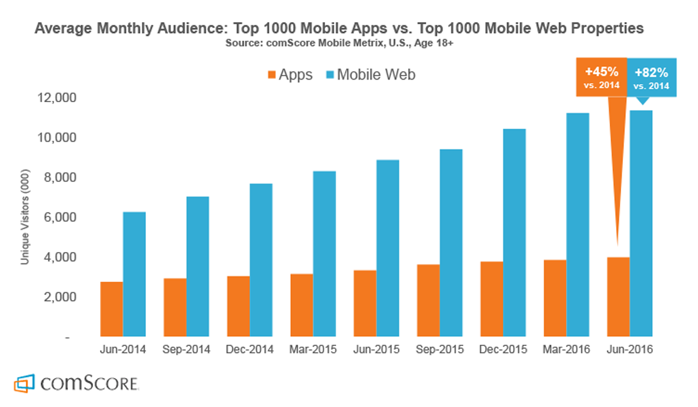

“The reality [is] that the web is in crisis. Actual, real, serious crisis.”
“Facebook ditched the Mobile Web”
“LinkedIn dumped HTML5”



76% increase in conversions
104% higher conversion rate for new users
Tripled time-on-site
100% more sales via push notifications
80% improvement in load time

“What we worried... might be too-little-too-late... has turned out to be a real thing that's actually succeeding in improving business outcomes.”
“The Web will catch up on key features”
“Web and Native will continue to blur”

new PaymentRequest(methodData, details)
.show()
.then(function(uiResult) {
processPayment(uiResult);
})
.catch(function(error) {
handlePaymentError(error);
});“JavaScript will get better. Or you can use $your-fave-lang.”

“Virtual Reality to make inroads
(after the usual Hype Curve)”“VR and AR merging”
“Digital and Physical Merging”
“AI tools could help us.”
“Imagine your IDE is connected to an AI service, and polls it for suggestions every keystroke (or few). Now you can have the whole of the machine-crunchable Web behind you.”
peteroshaughnessy.com/posts/artificial-intelligence-future-of-coding/